下面，我们打开Keychain的这个菜单（图9为英文界面）。
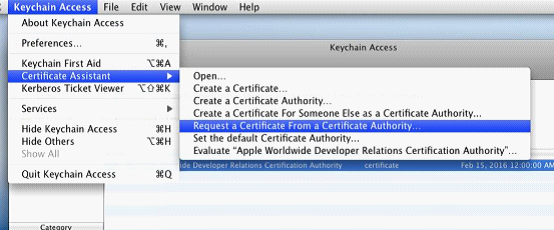
图9
其中文界面如图10所示：
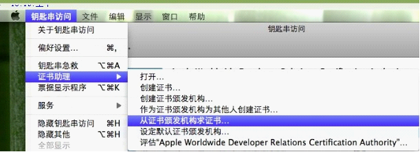
图10
接下来填写请求证书相关信息，如图11所示：
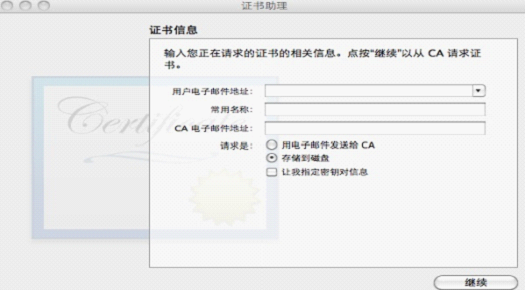
图11 证书相关信息
选择保存磁盘位置，为了方便查找，选择桌面，如图12所示：
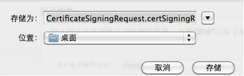
图12
然后点击continute按钮，就会在桌面上生成一个CertificateSigningRequest.certSigningRequest 的文件。
接下来我们需要生成调试证书，返回到Certificates主界面，其右边的内容由图6变为如图13所示的内容，如果没变，刷新一下即可。
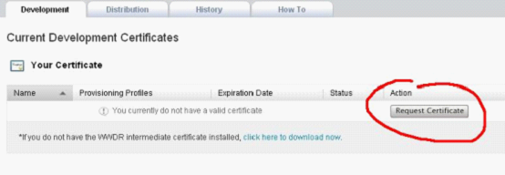
图13
点击Request Certificate，进入如图14所示的界面：
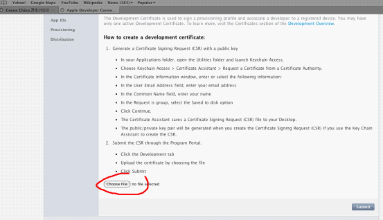
图14
点击Choose File，在磁盘的桌面上找到下载的证书，并选中CertificateSigningRequest.certSigningRequest，之后，其显示如图15所示：
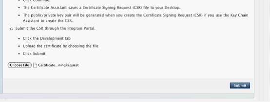
图15
点击Submit，显示如图16所示的界面，该界面在Certificates的右上方。
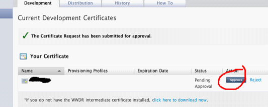
图16
这个时候证书就生成好了，点击Approve，之后界面如图17所示：
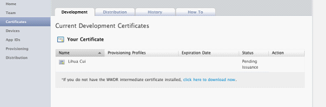
图17
这时你的证书是牌Pending的状态，刷新一个网页，就处于如图18所示的状态。
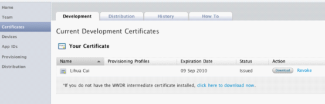
图18
这时点击 Download按钮，在系统磁盘上会得到一个developer_identity.cer ， 双击这个文件，则产生如图19所示：
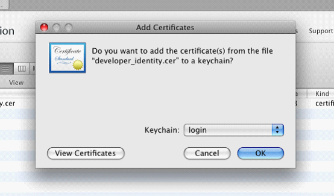
图19
点击OK，这时再打开你的keychain ，如图20所示：
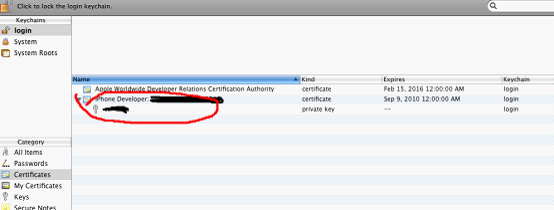
图20
切记这时能看到下面那个钥匙 状的东西，如果没有这个，是不可能调试的，以前有时，我经常看不到那个钥匙状的东西。
如果有钥匙状的东西，那么成功了，我们继续下去。